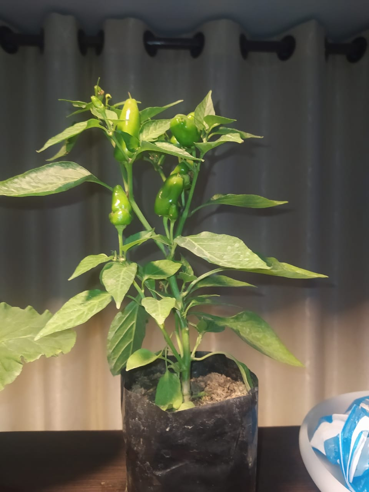

La historia del TOLA
la historia del tola recalca de hace mucho tiempo en las festividad a mis padres les encanta la llajua pero
a mi no ni a mis hermanas, y por eso en cada festividad nunca pero nadie hace llajua pero mis padres les gusta
asi que bueno desde ese momento surgio el poderoso TOLA como lo ven en su esplendot total
una planta de unica
